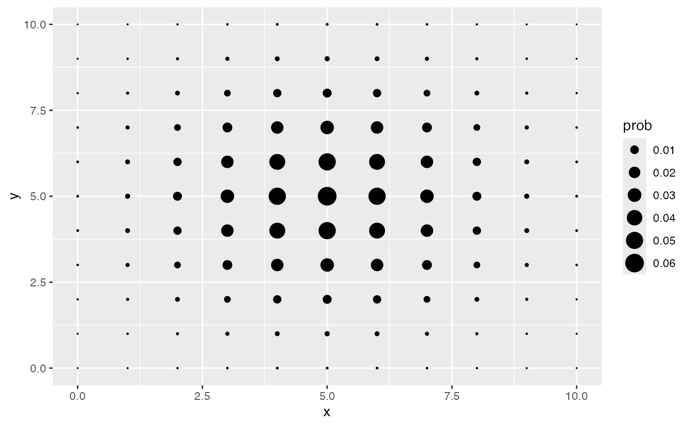
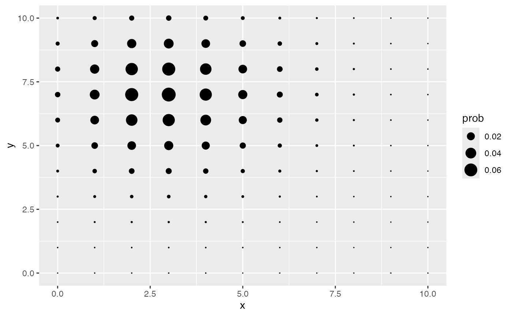
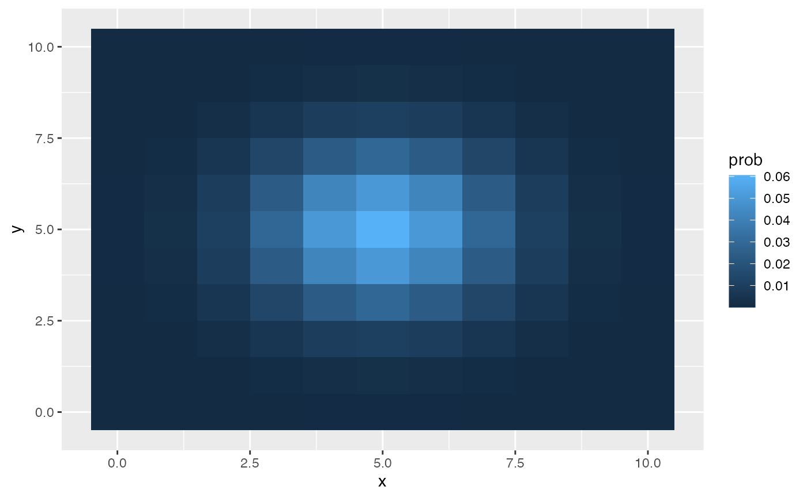
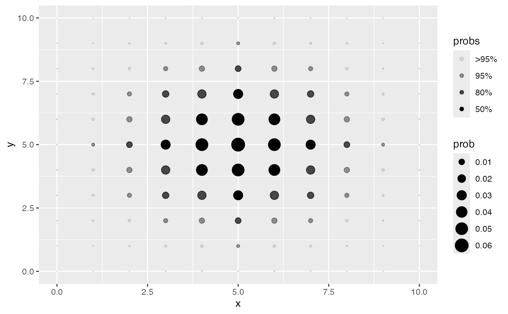
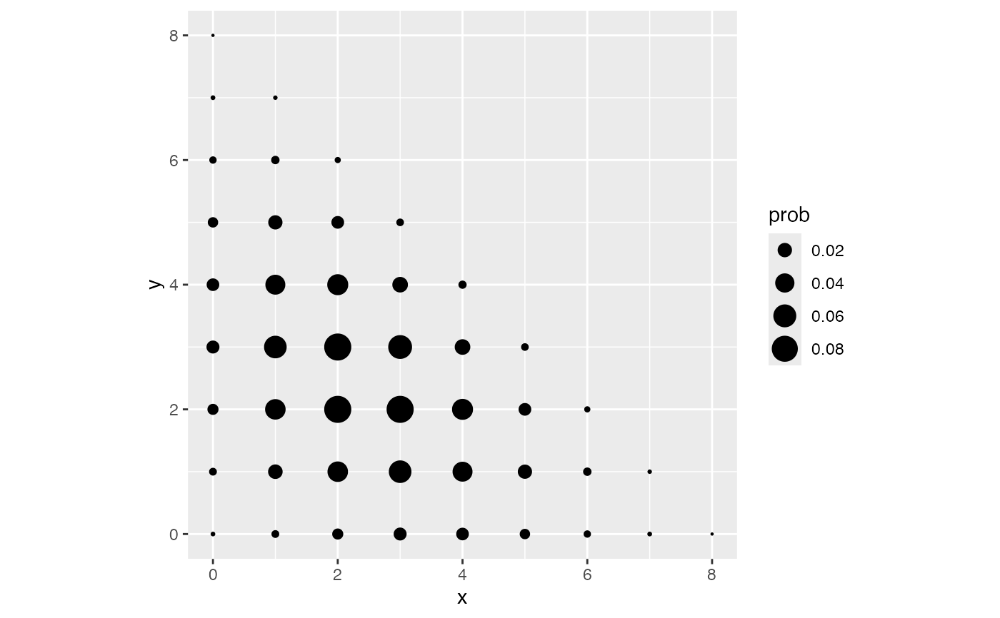

geom_pmf_2d() evaluates a bivariate probability mass function on a
discrete lattice and renders it either as a balloon plot of points
(type = "point", the default), with size encoding the probability mass,
or as a heatmap of tiles (type = "tile"), with fill encoding the
probability mass. One or more highest density regions can be highlighted
via shade_hdr: each lattice point is assigned the smallest requested HDR
that contains it, and the assignment is mapped to alpha as an ordered
factor, mirroring the legend convention of geom_pdf_2d().
Usage
geom_pmf_2d(
mapping = NULL,
data = NULL,
stat = StatPMF2d,
position = "identity",
...,
na.rm = FALSE,
show.legend = NA,
inherit.aes = FALSE,
fun,
xlim = NULL,
ylim = NULL,
support_x = NULL,
support_y = NULL,
args = list(),
shade_hdr = NULL,
drop_zeros = TRUE,
type = c("point", "tile")
)
StatPMF2d
GeomPMF2dTile
GeomPMF2dPointArguments
- mapping
Set of aesthetic mappings created by
aes(). If specified andinherit.aes = TRUE(the default), it is combined with the default mapping at the top level of the plot. You must supplymappingif there is no plot mapping.- data
The data to be displayed in this layer. There are three options:
If
NULL, the default, the data is inherited from the plot data as specified in the call toggplot().A
data.frame, or other object, will override the plot data. All objects will be fortified to produce a data frame. Seefortify()for which variables will be created.A
functionwill be called with a single argument, the plot data. The return value must be adata.frame, and will be used as the layer data. Afunctioncan be created from aformula(e.g.~ head(.x, 10)).- stat
The statistical transformation to use on the data for this layer. When using a
geom_*()function to construct a layer, thestatargument can be used to override the default coupling between geoms and stats. Thestatargument accepts the following:A
Statggproto subclass, for exampleStatCount.A string naming the stat. To give the stat as a string, strip the function name of the
stat_prefix. For example, to usestat_count(), give the stat as"count".For more information and other ways to specify the stat, see the layer stat documentation.
- position
A position adjustment to use on the data for this layer. This can be used in various ways, including to prevent overplotting and improving the display. The
positionargument accepts the following:The result of calling a position function, such as
position_jitter(). This method allows for passing extra arguments to the position.A string naming the position adjustment. To give the position as a string, strip the function name of the
position_prefix. For example, to useposition_jitter(), give the position as"jitter".For more information and other ways to specify the position, see the layer position documentation.
- ...
Other arguments passed on to
layer()'sparamsargument. These arguments broadly fall into one of 4 categories below. Notably, further arguments to thepositionargument, or aesthetics that are required can not be passed through.... Unknown arguments that are not part of the 4 categories below are ignored.Static aesthetics that are not mapped to a scale, but are at a fixed value and apply to the layer as a whole. For example,
colour = "red"orlinewidth = 3. The geom's documentation has an Aesthetics section that lists the available options. The 'required' aesthetics cannot be passed on to theparams. Please note that while passing unmapped aesthetics as vectors is technically possible, the order and required length is not guaranteed to be parallel to the input data.When constructing a layer using a
stat_*()function, the...argument can be used to pass on parameters to thegeompart of the layer. An example of this isstat_density(geom = "area", outline.type = "both"). The geom's documentation lists which parameters it can accept.Inversely, when constructing a layer using a
geom_*()function, the...argument can be used to pass on parameters to thestatpart of the layer. An example of this isgeom_area(stat = "density", adjust = 0.5). The stat's documentation lists which parameters it can accept.The
key_glyphargument oflayer()may also be passed on through.... This can be one of the functions described as key glyphs, to change the display of the layer in the legend.
- na.rm
If
FALSE, the default, missing values are removed with a warning. IfTRUE, missing values are silently removed.- show.legend
logical. Should this layer be included in the legends?
NA, the default, includes if any aesthetics are mapped.FALSEnever includes, andTRUEalways includes. It can also be a named logical vector to finely select the aesthetics to display. To include legend keys for all levels, even when no data exists, useTRUE. IfNA, all levels are shown in legend, but unobserved levels are omitted.- inherit.aes
If
FALSE, overrides the default aesthetics, rather than combining with them. This is most useful for helper functions that define both data and aesthetics and shouldn't inherit behaviour from the default plot specification, e.g.annotation_borders().- fun
A bivariate probability mass function accepting a length-2 numeric vector
v = c(x, y)and returning one numeric mass value.- xlim, ylim
Numeric vectors of length 2 specifying the lattice range on each axis; integers spanning the range are used. Each defaults to
c(0, 10).- support_x, support_y
Optional numeric vectors of exact support points for each axis, overriding
xlim/ylim. Non-integer values are allowed.- args
A named list of additional arguments passed to
fun.- shade_hdr
(Optional) A numeric vector of target coverages for the highest density regions (HDRs) to highlight, each strictly between 0 and 1, e.g.
shade_hdr = c(0.5, 0.8, 0.95): the smallest sets of lattice points containing at least the specified probability masses. Each lattice point is assigned the smallest requested HDR containing it; the assignment is exposed as the ordered factorafter_stat(probs)and mapped toalphaby default, so points outside all requested regions render nearly transparent. Because a discrete distribution may not achieve the exact coverages, the smallest HDR with coverage >= each target is used; HDRs are threshold-based, so all lattice points tied at the cutoff mass are included and the actual coverage can exceed the target. A message is issued viacli::cli_inform()reporting the actual coverages whenever they differ.- drop_zeros
Logical. If
TRUE(default), lattice points with zero mass are removed before rendering. Useful for distributions with non-product support evaluated over a bounding lattice.- type
Character. Either
"point"(default) for a balloon plot withsize = after_stat(prob), or"tile"for a heatmap withfill = after_stat(prob).
Details
The supplied mass function uses ggfunction's 2D function convention, shared
with geom_pdf_2d() and geom_function_2d_1d(): fun receives a single
numeric vector v = c(x, y) and returns one probability mass.
The evaluation lattice is the product of the per-axis supports: integers
spanning xlim and ylim (each defaulting to 0:10), or the exact values
in support_x and support_y when provided. Distributions with
non-product support, such as a trinomial whose support is a simplex, can be
plotted by evaluating over a bounding lattice and returning 0 off the
support; cells with zero mass are removed by default (drop_zeros = TRUE).
The total mass over the lattice is checked to be 1 (within 1e-2), with a
cli::cli_alert() otherwise; disable via
options(ggfunction.check = FALSE). As in geom_pmf(), the exact
shade_hdr coverages may not be achievable for a discrete distribution, in
which case the smallest HDR with coverage at least each target is used and
a message reports the actual coverages.
Unlike geom_pmf(), geom_pmf_2d() defaults to inherit.aes = FALSE
since the layer is driven entirely by fun. For the default point mode,
ggplot2::scale_size_area() is recommended so that mass is proportional to
point area and zero mass maps to zero area.
Computed variables
These are calculated by the stat part of the layer and can be accessed
with ggplot2::after_stat().
after_stat(x)andafter_stat(y)Lattice coordinates.
after_stat(prob)Probability mass at each lattice point.
after_stat(probs)Only when
shade_hdris supplied: the smallest requested HDR containing each lattice point, as an ordered factor whose outermost level (e.g.">95%") collects points outside all requested regions.
Aesthetics
Point mode understands the aesthetics of ggplot2::geom_point() (notably
size, colour, fill, shape, alpha, stroke); tile mode those of
ggplot2::geom_tile() (notably fill, alpha, colour, linewidth,
width, height). Points use the fillable shape 21 by default, with
fill following colour when unset, so mapping fill (e.g.
fill = after_stat(probs)) colors the point interiors while colour
outlines them. The probability mass is mapped to size (point) or fill
(tile) by default, and when shade_hdr is supplied, alpha is
additionally mapped to after_stat(probs).
See also
geom_pmf() for univariate mass functions; geom_pdf_2d() for
bivariate densities.
Examples
# Independent product binomial
dbinom2 <- function(v, sizes = c(10, 10), probs = c(0.5, 0.5)) {
dbinom(v[1], sizes[1], probs[1]) * dbinom(v[2], sizes[2], probs[2])
}
ggplot() +
geom_pmf_2d(fun = dbinom2, xlim = c(0, 10), ylim = c(0, 10)) +
scale_size_area()

# Parameterized via `args`
ggplot() +
geom_pmf_2d(
fun = dbinom2, xlim = c(0, 10), ylim = c(0, 10),
args = list(probs = c(0.3, 0.7))
) +
scale_size_area()

# Tile heatmap
ggplot() +
geom_pmf_2d(fun = dbinom2, xlim = c(0, 10), ylim = c(0, 10),
type = "tile")

# Highlight the 50/80/95% highest density regions
ggplot() +
geom_pmf_2d(fun = dbinom2, xlim = c(0, 10), ylim = c(0, 10),
shade_hdr = c(0.5, 0.8, 0.95)) +
scale_size_area()
#> ! shade_hdr: exact coverage is not achievable for this discrete distribution.
#> ℹ Using smallest HDRs with coverage >= each target: 50% -> 54.6%, 80% -> 83.6%,
#> 95% -> 95.9%.

# Non-product support: trinomial over a bounding lattice
dtrinom <- function(v, size = 8, prob = c(0.3, 0.3, 0.4)) {
if (sum(v) > size) return(0)
dmultinom(c(v, size - sum(v)), prob = prob)
}
ggplot() +
geom_pmf_2d(fun = dtrinom, xlim = c(0, 8), ylim = c(0, 8)) +
scale_size_area() +
coord_equal()
